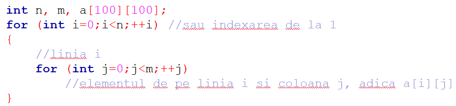
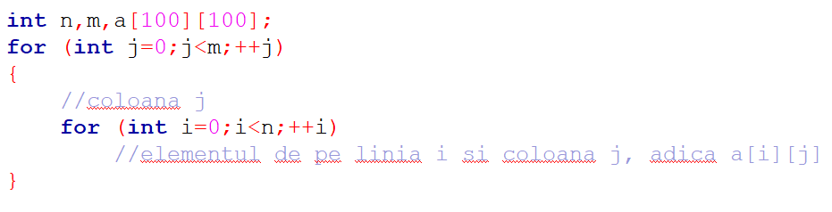
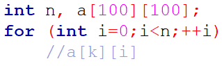
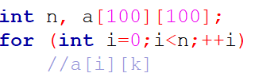

Aceasta presupune accesarea elementelor matricei, într-o anumită ordine. De obicei, aceasta se face pe linii, de la stânga la dreapta astfel:
De asemenea, se poate realiza şi parcurgerea pe coloane:
Totodată, dacă vrem să parcurgem o anumită linie k clar precizată, vom parcurge la fel ca la un tablou unidimensional,întrucât elementele diferă prin indicele coloanei.
În plus, se poate parcurge în mod similar o anumită coloană k a matricei, având în vedere că indicii liniilor iau valori de la 0 la n:
